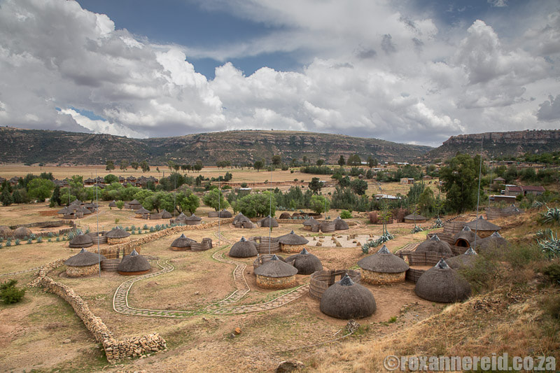
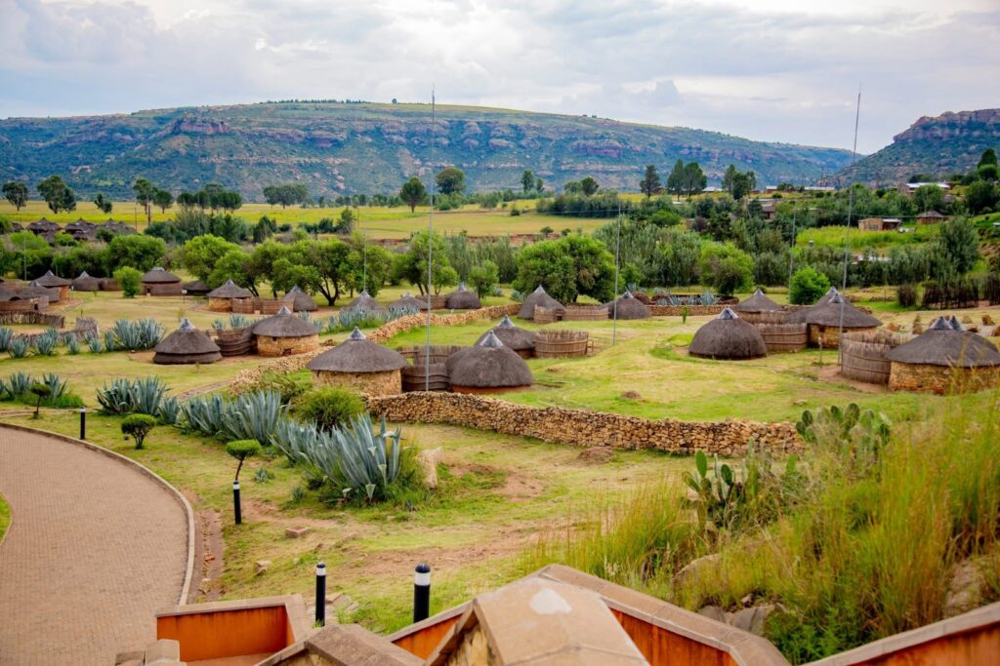
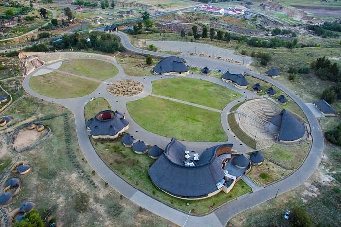
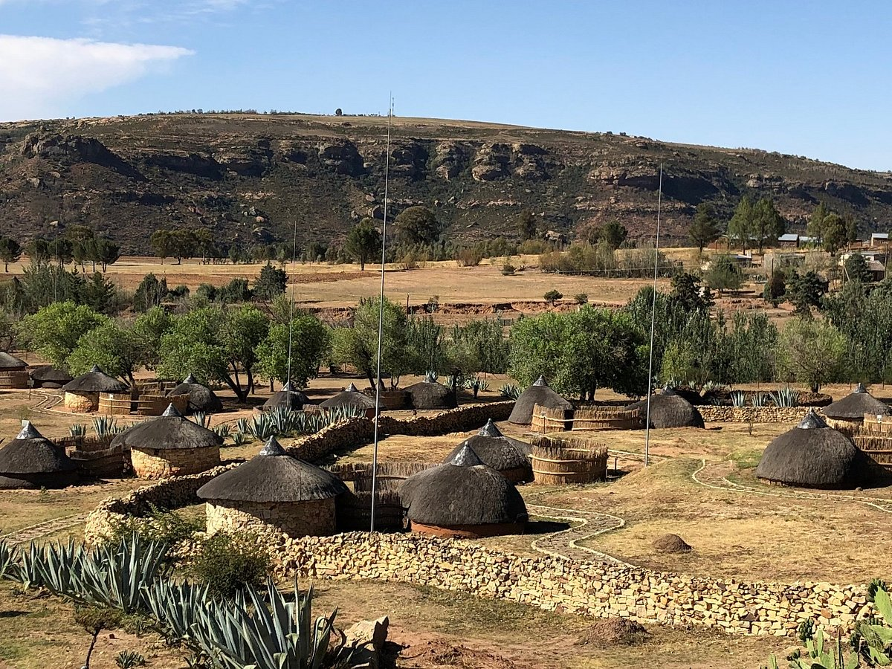
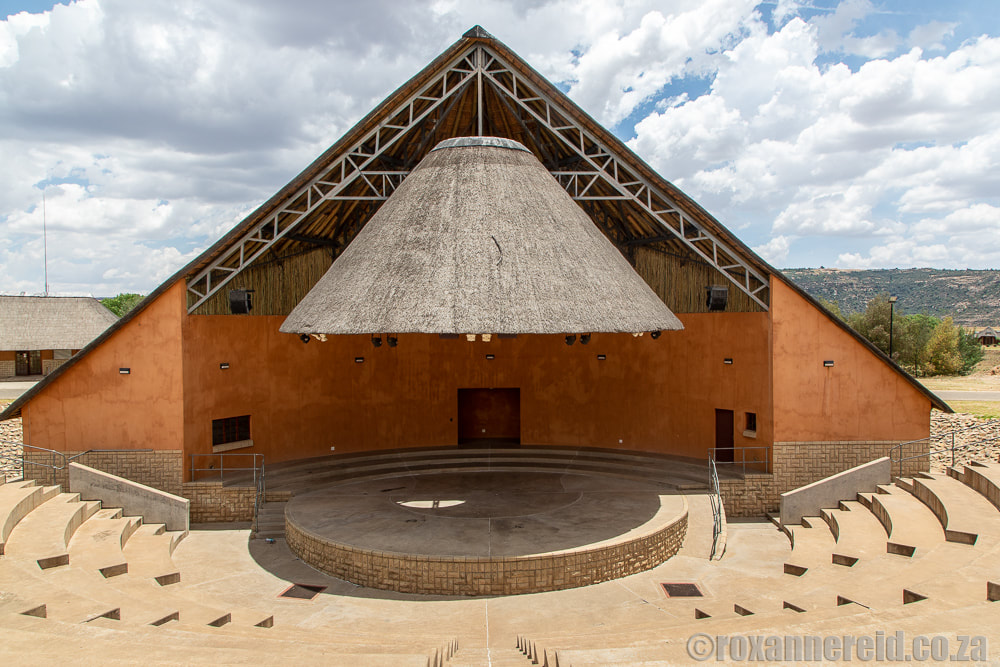
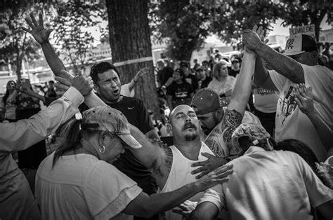

Photos captured by Relebohile Motlabane
This gallery presents some of the photographs I have captured during events, community activities and daily life. Photojournalism is an important part of storytelling because images help communicate stories visually.
|
 Community event in Maseru |
 Beautiful Houses in Lesotho |
 University student activity |
|
 Street life in Lesotho |
 Community development project |
 Daily life moments |